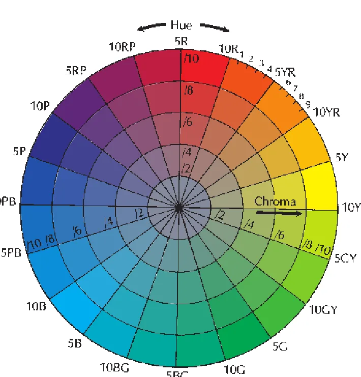

نسخه استخراجشده؛ ترجمه یا تأیید علمی انجام نشده است. وضعیت: captured
یک قیاس برای شروع: «همانطور که یک جسم جامد با سه بُعد فرم فیزیکی — طول، عرض و عمق — قابل توصیف است، رنگ نیز میتواند با همان دقت با سه ویژگی اولیه توصیف شود.» ولی «توصیف این ویژگیها به سیستم رنگ بهکاررفته بستگی دارد».
و دو سیستم: «سیستم نظم رنگ مانسل که بصریتر توصیف میکند، و سیستم رنگ CIELab که کمّیتر است.»
و تعریف هیو: «هیو، گونهی خاصی از یک رنگ است — قرمز، سبز، زرد و مانند آن — و با طول موج نور بازتابیده یا عبوریِ مشاهدهشده تعیین میشود.» و قاعدهی جهتدارش: «هرچه طول موج کوتاهتر، هیو به بخش بنفش طیف نزدیکتر؛ هرچه بلندتر، به بخش قرمز نزدیکتر.» و در سیستم مانسل، «هیوها دور یک چرخ مرتب شدهاند».
و چرا CIELab در پژوهش دندانپزشکی غالب شد: «تقریباً بهطور انحصاری برای پژوهش رنگ در دندانپزشکی در سراسر جهان به کار رفته است. در ۱۹۷۶ معرفی شد.» و برتری کلیدیاش: «برخلاف سیستم مانسل، تفسیر بالینی آسانی دارد، چون فاصلههای برابر در فضای رنگ CIELab — یعنی اختلافهای رنگ یا ΔE — تقریباً گامهای یکنواختی در ادراک رنگ انسان را نمایندگی میکنند.»
و نتیجهی عملی این یکنواختی: «این یعنی ممکن است بزرگی اختلاف رنگ قابل ادراک یا قابل قبول را — مثلاً میان یک روکش پرسلنی و دندان طبیعی مجاور — تعریف کرد.»
و سه مختصات CIELab: «L* شبیه Value در سیستم مانسل است و روشنایی یا خصلت سیاه/سفید رنگ را نمایندگی میکند؛ a* و b* ویژگیهای کروماتیک رنگ را توصیف میکنند.» و جایگاه رنگ دندان: «رنگهایی با ولیو یا L* بالا — مانند رنگهای دندان — نزدیک بالای فضای رنگ قرار میگیرند.»
و معنای علامت a* و b*: «مختصات a* با محور قرمز-بنفش/آبی-سبز در فضای مانسل متناظر است: a* مثبت به رنگی عمدتاً قرمز-بنفش و a* منفی به رنگی آبی-سبزتر اشاره دارد. به همین ترتیب، b* با محور زرد/بنفش-آبی متناظر است.»
و قیاس نشانی خانه — تفاوت دو سیستم: در مانسل، رنگ «با یک مختصات قطبی (هیو) و یک مختصات خطی یا دکارتی (کروما)» مشخص میشود؛ در CIELab «هر دو مختصات (a* و b*) دکارتیاند». این را میتوان به نشانی یک خانه تشبیه کرد: «۱۱٫۸۵ مایل در جهت شمال-شمالغربی از مرکز شهر» در برابر «۱۰٫۶ مایل شمال و ۵٫۳ مایل غرب از مرکز شهر» — «توصیفها همان موقعیت در فضا را نمایندگی میکنند».
و مهمترین عدد این درس: «سیستم طوری مرتب شده که اختلاف رنگ برابر ۱ توسط ۵۰ درصد ناظران با دید رنگی طبیعی قابل ادراک باشد.»
و تحول بعدی — CIEDE2000: «در ۲۰۰۱ یک فرمول اختلاف رنگ جدید CIE 2000 بهعنوان فرمول جدید اختلاف رنگ CIE پذیرفته شد.» و چه چیزی به آن افزوده شد: «بر پایهی CIELab است و همچنین توابع وزندهی کروما، روشنایی و هیو و نیز یک جملهی تعاملی میان اختلاف هیو و کروما برای بهبود عملکرد در آبی، و یک ضریب مقیاس روی a* برای بهبود عملکرد در خاکستری را در بر دارد.»
و برتریاش: «فرمول CIEDE2000 نشان داده شده که تطابق بهتری با اختلاف رنگ محاسبهشده فراهم میکند و بنابراین شاخصهای بهتری از قابلیت ادراک انسان یا اختلاف رنگ میان رنگ دندان در مقایسه با فرمولهای CIELab یا CMC میدهد.»

تعریف عملیاتی: «فرایندی که در آن رنگ دندانهای مجاور در یک روکش متالسرامیک یا سرامیکی بازتولید میشود، فرایند بازتولید رنگ نامیده میشود.»
و دو فاز آن: «فاز تطابق رنگ، و سپس فاز تکثیر رنگ. تطابق رنگ میتواند از راه تطابق بصری یا تحلیل ابزاری که فزایندهتر محبوب میشود انجام گیرد. تکثیر رنگ در آزمایشگاه رخ میدهد، جایی که پرسلن متناظر یا مخلوطهای پرسلن پیچیدهتر برای ساخت ترمیم به کار میروند.»
و راه اصلاح در پایان: «اگر اختلافها میان ترمیم دائمی و ترمیم اولیهی تطابقیافته از نظر بصری قابل ادراک باشند، ممکن است کلینیسین پرسلنهای کاراکتریزاسیون سطحی را برای تنظیم هر اختلاف رنگی به کار برد.»
و ارزیابی صادقانه از روش بصری: «ارزیابی بصری رنگ و شفافیت، روشی است که بیش از همه در دندانپزشکی به کار میرود. مطالعات نشان دادهاند این روش پرکاربرد دشوار است که با دقت به کار رود و اغلب نتایج غیرقابل اتکا و ناسازگار میدهد.»
ولی یک هدف واقعبینانه که فشار را کم میکند: «خوشبختانه، یک ترمیم زندهنما و موفق لازم نیست نسخهی دقیقی از رنگ و شفافیت دندانهای مجاور باشد. با این حال باید در نتیجهی توزیع مواد سرامیکی در ترمیم، با دندانها ترکیب شود.»
و سه عاملی که ظاهر رنگ را تعیین میکنند: «رنگ ظاهری یک شیء تحت تأثیر خواص فیزیکی خودش، ماهیت نوری که در معرضش قرار دارد، و ارزیابی ذهنی ناظر است.» و مشکل: «تغییرپذیری دو عامل از سه عامل — یعنی نورپردازی و ذهنیت ناظر — میتواند باعث شود همان شیء بسیار متفاوت به نظر برسد.»
و نتیجهگیری راهبردی: «با درک این سه عامل اصلی — نورپردازی، ذهنیت دید انسان، و خودِ شیء — دندانپزشک میتواند دقت و قابلیت اتکای این فرایند را بهبود دهد.»
و یک اصل بنیادی نوری: «نور برای وجود رنگ لازم است. شیئی که بهعنوان رنگ معینی ادراک میشود، همهی امواج نور متناظر با رنگهای دیگر را جذب و تنها امواج رنگ خودش را بازتاب میکند.»